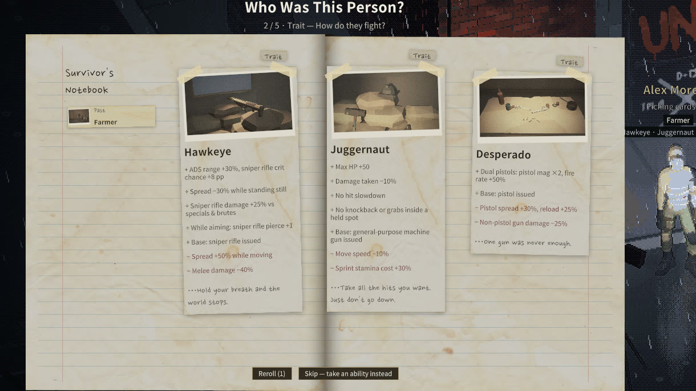

Every run starts with who you were.
A notebook asks three questions: who was this person, how do they fight, what can they do? You answer with photo cards. A mechanic who fights like a juggernaut plays nothing like a locksmith with a sniper's eye.
53 character cards, and they keep growing, branching and scarring as the run goes on.